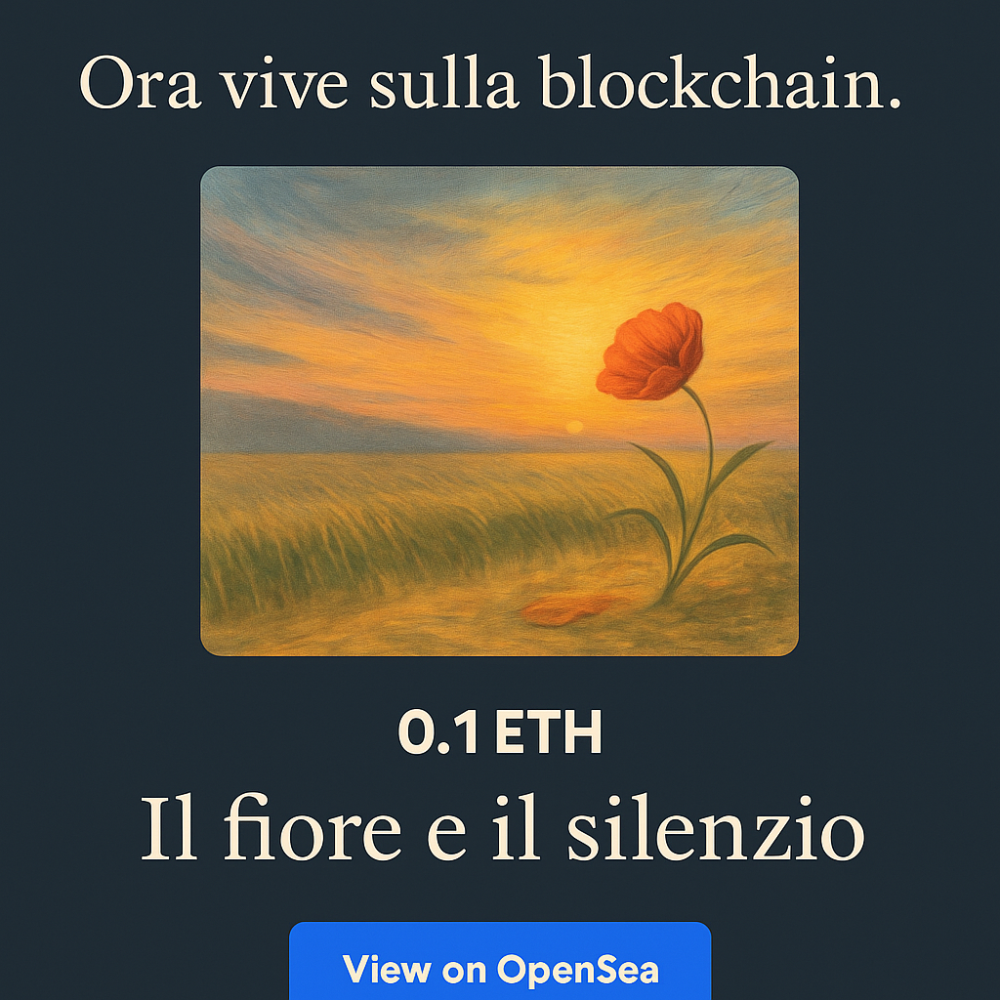

Questa pagina nasce per ospitare un gesto silenzioso: un fiore piantato sulla blockchain, nel vento incerto del digitale.
Non è una vetrina, non è una promozione. È una poesia che ho trasformato in NFT, non per vendere, ma per lasciare una traccia. Come chi incide una parola su pietra e poi si allontana.
Un NFT poetico inciso su Ethereum – per chi ascolta ciò che tace.
Visualizza su OpenSea